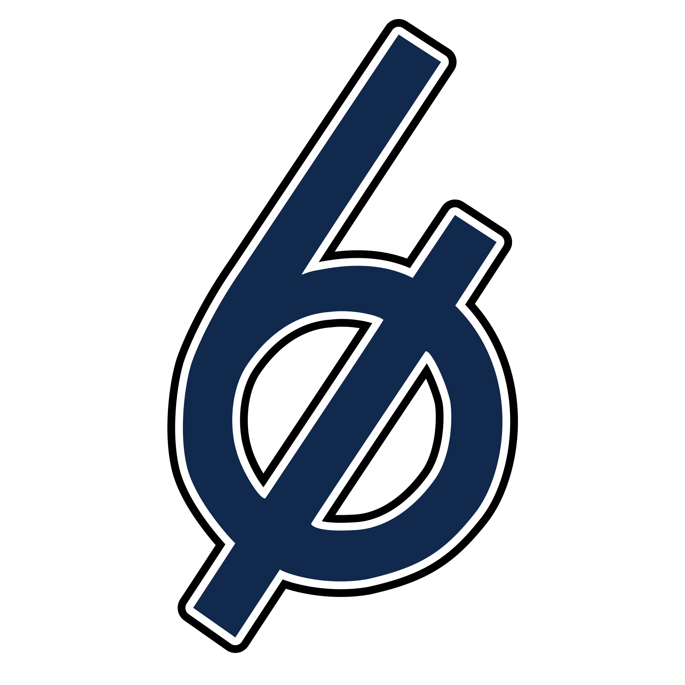

Corpus Text Analysis in the works
A full text-analysis pass over my prose: two novels, a novella, and a blog. Word patterns, character co-occurrence, tone arcs over book-time. The charts land here when they're ready.

The maker lab of Kyle Tolle. Since 2008.
“Knowledge isn't unique; action is.”
A full text-analysis pass over my prose: two novels, a novella, and a blog. Word patterns, character co-occurrence, tone arcs over book-time. The charts land here when they're ready.
A color playground. Tap for a new random background.
A dice roller where the URL is the roll. Try #2d6+3.
A dice-rolling API in a Cloudflare Worker. Powers a Slack /roll command.